Workshop · PICO OS 6 · WebSpatial · Claude Code
PICO WebSpatial Academy
Take an ordinary website, make it spatial, and run it in the PICO OS 6 emulator. Claude Code does the typing.
Six levels, from an empty laptop to your own site floating in space. Every step has one action, the exact command or prompt, and what you should see.
Wi-Fi Homebrew-Club password homebrew
Three facts before you start
Each one has cost someone an hour. Say them out loud.
- WebSpatial requires React. It works by replacing React's JSX runtime. There is no plain-HTML path today.
- WebSpatial needs PICO OS 6. The emulator is PICO OS 6 and has the runtime built in, so you open a URL and nothing gets packaged. A PICO 4 Ultra runs OS 5.x and shows a flat page.
- The SDK just moved to 2.0.
@webspatial/react-sdk2.0.0 is what the labs pin. We teach the 2.x API (<SpatialBoot>). Older guides use@webspatial/vite-pluginandXR_ENV=avp, which belong to 1.x.
The level map
Six levels, three hours
Pass each lab's check before you start the next level. Press 0 to 5 to jump.
- L0L0 · Setup25 min in the room · 2 h self-paced
- L1L1 · Hello Spatial25 min in the room · 1.5 h self-paced
- L2L2 · Spatialize a website45 min in the room · 3 h self-paced
- L3L3 · 3D + volumes30 min in the room · 2.5 h self-paced
- L4L4 · Space Invaders in depth30 min in the room · 2.5 h self-paced
- L5L5 · Agentic expert25 min in the room · 4 h self-paced
L2 is the headline lab. The emulator install is pre-work: don't try to install Android Studio in the room.
How the pieces talk
Four things on one machine. Claude Code drives all of them.
- Node + Vite serves your site on a port per lab (5301 for lab 1).
- PICO OS 6 emulator is a PICO device in a window, built on the Android emulator.
- pico-cli is PICO's one command line for the emulator, apps, logs, screenshots and perf.
- Claude Code runs pico-cli and the dev server, and asks the
pico-dev-knowledgeMCP about PICO docs.
The emulator opens your site at http://localhost:<port>/, mapped to your machine with adb reverse. node setup/launch.mjs <n> does the mapping for you.
From PICO · Show this first
From PICO: PICO CLI Quickstart, David Oh
David Oh's deck is the native Spatial SDK (Kotlin) path. The Academy is the WebSpatial path to the same PICO OS 6 emulator.
- His path:
pico-cli project createa planar, volumetric or stage app in Kotlin, build it, then install and launch it in the emulator. - Our path: a React website, spatialized with WebSpatial, opened as a Web App in the same emulator.
- Same pico-cli, same emulator, same Claude Code wiring.
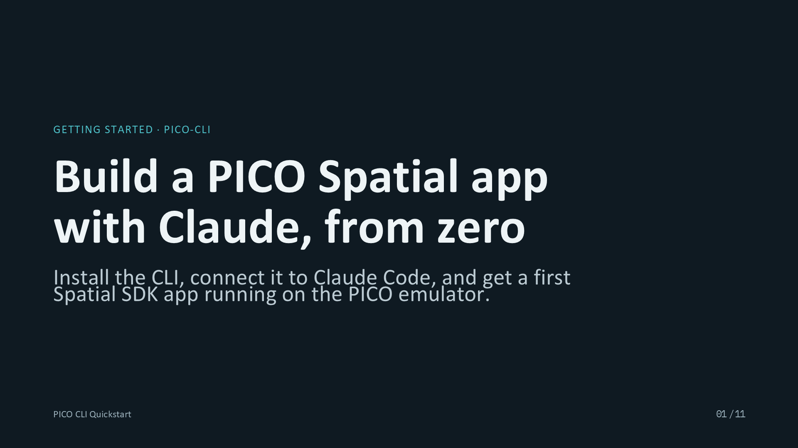
Level 0 · Setup
Setup: Claude Code, Node, pico-cli and the PICO OS 6 emulator
25 minutes in the room, because the install is pre-work. 2 hours self-paced.
- Why the emulator, not a headset: WebSpatial needs PICO OS 6. The emulator is OS 6. A PICO 4 Ultra is OS 5.x.
- Emulator machine: Windows 10/11 or an Apple Silicon Mac, 16 GB RAM (32 GB is comfortable), about 40 GB free disk, an NVIDIA GeForce GTX 1060 or better.
- Below that bar? You take the web-only track: every lab runs flat in a desktop browser.
- Git, and Node 20.19+ or 22.12+ (Vite 8's floor). A paid Claude plan for Claude Code.
- Licence: the PICO Emulator and PICO WebSpatial browser are PICO-licensed. PICO has cleared tonight's attendees to use both.
Level 0 · Setup · Read this before you install
Android Studio 2025.1.x. Exactly.
PICO's plugin only loads in Android Studio 2025.1.x. The default winget and brew installs give you 2026.1, which will not work.
- Already on a newer release? Install 2025.1.4.8 beside it. Don't uninstall anything.
winget install --id Google.AndroidStudio -e --version 2025.1.4.8 # Windowsbash setup/install-macos.sh --yes --emulator # macOSYou should see
Android Studio → Help → About shows 2025.1.4.8. After you get the kit (L0-s5), npm run doctor confirms it.
Level 0 · Setup · Step 1 of 8
Install Claude Code
Do this Run the native installer for your OS, then check it.
irm https://claude.ai/install.ps1 | iex # Windows (PowerShell)curl -fsSL https://claude.ai/install.sh | bash # macOSclaude doctorYou should see
claude doctor explains anything wrong with the install. claude --version prints a version number.
Level 0 · Setup · Step 2 of 8
Confirm Node and pico-cli
Do this Check Node's version and install pico-cli from its scoped package.
Skip the install if the version check already works. After any winget install, close and reopen the terminal so it finds the new command.
winget install --id OpenJS.NodeJS.LTS -enode --versionnpm install -g @picoxr/pico-clipico-cli --versionYou should see
node prints v20.19+ or v22.12+. pico-cli prints pico-cli/0.5.x, for example: pico-cli/0.5.0 (public) win32-x64 node-v22.17.0
Level 0 · Setup · Step 3 of 8
Get the kit
Do this Clone the workshop repo and install every lab's dependencies once.
Skip the install if the version check already works. After any winget install, close and reopen the terminal so it finds the new command.
winget install --id Git.Git -egit clone https://github.com/RayyanZahid/pico-workshops.gitcd pico-workshops/webspatial-academynpm run labs:installYou should see
A pico-workshops folder with webspatial-academy inside. labs:install runs one npm workspace install that serves every lab.
Level 0 · Setup · Step 4 of 8
Run the doctors
Do this Run the kit's doctor, then have Claude Code turn pico-cli's failures into a fix list.
npm run doctorRun `pico-cli doctor --format json`, group every failing check by module, and give me the exact fix command for each one. Do not run any --fix yet.You should see
The kit doctor tells you your track: emulator or web-only. pico-cli doctor groups its checks by module. Red lines are fine for now, as long as each one gets a fix or a written reason.
Level 0 · Setup · Step 5 of 8
Give Claude Code PICO's skills and docs
Do this Wire the PICO plugin skills and the pico-dev-knowledge MCP into Claude Code.
Close your other Claude Code sessions first. Setup can restart the knowledge backend out from under them.
pico-cli setup --agent-tool claude-code --platform spatial --scope global --yespico-cli plugin doctorYou should see
plugin doctor reports the skills installed. Restart Claude Code so it loads the new skills and MCP server.
Level 0 · Setup · The 16 GB recipe
16 GB of RAM? Do this before you boot.
The emulator reserves 6 GB by default. On 16 GB, make room first.
- Close Chrome, Slack, Android Studio and anything else heavy.
- With the emulator stopped, set this in
~/.pico/avd/<avd name>.avd/config.ini:
wsl --shutdown # Windowshw.ramSize=4096Level 0 · Setup · Step 6 of 8
Boot the emulator
Do this Start the PICO OS 6 emulator from a terminal and wait for adb.
Run it in a terminal you can see. If it dies, the real reason is printed there and nowhere else.
pico-cli emulator startStart the PICO emulator with `pico-cli emulator start`, wait for adb readiness, then run `pico-cli emulator status` and `pico-cli device list` and tell me the device id to use for the rest of the day.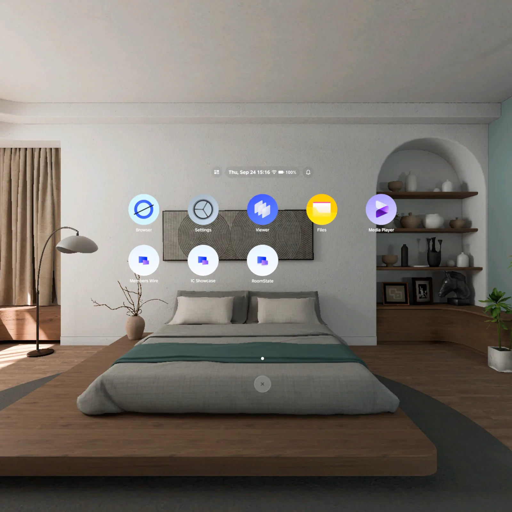
You should see
The emulator window opens and the command returns once adb is ready. "Insufficient RAM free" means go back to the 16 GB recipe.
Level 0 · Setup · Step 7 of 8
Get your device id
Do this Confirm the emulator is up and note its device id for the rest of the day.
pico-cli emulator statuspico-cli device listYou should see
Process running: yes ADB online: yes device list shows one device, usually emulator-5554.
Level 0 · Setup · Step 8 of 8
Prepare the web runtime
Do this Download the PICO WebSpatial browser package that web launch uses.
pico-cli web setupYou should see
The command exits 0. If you skip it, the first launch downloads it instead.
Level 0 · Setup · Checkpoint
Checkpoint: you are set up when...
Every box ticked, or a written reason next to it.
npm run doctornames your track, andpico-cli doctoris clean or explained.pico-cli emulator statusshows a running emulator, or you're on the web-only track.- You know your device id (usually
emulator-5554). - You can say why the emulator opens
localhostthroughadb reverse, not10.0.2.2.
adb reverse makes the emulator's localhost:<port> your machine's port, and localhost is a secure context. 10.0.2.2 loads but was not a secure context in our test (no install); use localhost.
Level 0 · Setup · Lab
Lab: setup
The L0 lab is the setup guide itself: doctor clean or explained, emulator running.
Work through setup/SETUP.md step by step. If your emulator isn't installed yet, pair with a neighbour whose emulator is.
Level 1 · Hello Spatial
Hello Spatial: your first WebSpatial app
A website becomes an app in the room. You keep writing HTML and CSS.
- Not WebXR. WebXR gives you a canvas and a head pose, and you draw every pixel. WebSpatial gives the OS your HTML to render next to other apps.
- Window scene: a 2D panel for GUI. It keeps the same apparent size, so text stays readable.
- Volume scene: a box with real depth, in metres, for showing an object.
- React is required. The SDK hooks React's JSX runtime. A static .html file never passes through it.
- No packaging on PICO OS 6. Run the dev server, open the URL, install it as a Web App from the address bar.
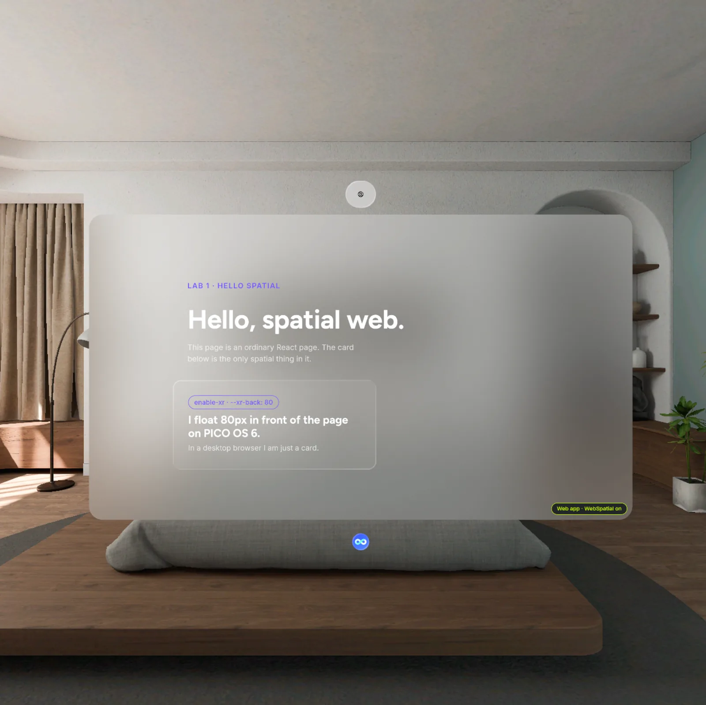
Level 1 · Hello Spatial · The one idea
A browser tab is flat. A Web App has depth.
WebSpatial only switches on inside PICO OS 6's Web App Runtime. The button in the address bar is the door.
Browser tab
- Your page, in a PICO Browser tab.
- Flat.
enable-xrand--xr-*do nothing here. display-modeisbrowser.
Web App
- Install it from the address bar: the monitor icon, titled Install app on OS 6.0.0 (PICO's docs call it Open as standalone app).
- Depth. WebSpatial switches on: elements lift,
window.openopens new windows. - Needs a secure URL:
localhostviaadb reverse. display-modeisstandaloneorminimal-ui.
Level 1 · Hello Spatial · The door only opens if...
What the Web App needs
No install, no depth. Two things decide whether the page can become a Web App.
- A secure URL. In the emulator open
http://localhost:<port>/throughadb reverse;node setup/launch.mjs <n>sets this up. 10.0.2.2 loads but was not a secure context in our test (no install); use localhost. - A manifest with the 4 required fields:
name(orshort_name),icons,start_url,display. Link it with<link rel="manifest" href="/app.webmanifest">and serve it as JSON (application/manifest+json).
To see the adb reverse it will run, without running it:
node setup/launch.mjs 1 --dry-run{ "name": "Hello Spatial", "start_url": "/", "display": "minimal-ui",
"icons": [ { "src": "/icons/icon-512.png", "sizes": "512x512", "type": "image/png" } ] }Level 1 · Hello Spatial · Step 1 of 8
Show which runtime you're in
Do this Put a badge on the page that says browser or webapp.
function getWebRuntime() {
if (window.matchMedia('(display-mode: browser)').matches) return 'browser';
if (window.matchMedia('(display-mode: standalone)').matches
|| window.matchMedia('(display-mode: minimal-ui)').matches) return 'webapp';
}You should see
In a browser tab the badge says browser, and nothing pops out: that's expected. Installed as a Web App it says webapp, and enable-xr elements lift.
Level 1 · Hello Spatial · SDK 2.0.0, as the labs pin it
The whole recipe, in four lines
No vite-plugin. No XR_ENV. One bundle; PICO is detected at runtime from the user agent.
After the four steps below, mark something: <div enable-xr> with position: relative, --xr-back: 80 (px) and --xr-background-material: translucent.
npm i @webspatial/react-sdk@2.0.0 @webspatial/core-sdk@2.0.0 --save-exact// 2. tsconfig: "jsxImportSource": "@webspatial/react-sdk" AND vite.config.ts:
react({ jsxImportSource: '@webspatial/react-sdk' })
// 3. main.tsx
<SpatialBoot><App /></SpatialBoot>
// 4. index.html
<link rel="manifest" href="/app.webmanifest">Level 1 · Hello Spatial · Step 2 of 8
Scaffold the app
Do this Ask Claude Code to scaffold a Vite + React app wired for WebSpatial 2.x.
Doing it by hand? These two are the start:
Scaffold a Vite + React + TypeScript app in ./hello-spatial wired for WebSpatial 2.x: install @webspatial/react-sdk and @webspatial/core-sdk, set jsxImportSource to @webspatial/react-sdk in tsconfig.app.json, wrap the root in <SpatialBoot>, add public/app.webmanifest (name, start_url /, display minimal-ui, a 512 any icon and a 1024 maskable icon) linked from index.html, set react({ jsxImportSource: '@webspatial/react-sdk' }) in vite.config.ts, and make sure npm run dev:xr binds 0.0.0.0. Run the dev server and tell me the URL the emulator should open.npm create vite@latest hello-spatial -- --template react-tsnpm i @webspatial/react-sdk@2.0.0 @webspatial/core-sdk@2.0.0 --save-exactLevel 1 · Hello Spatial · Step 3 of 8
Route JSX through the SDK
Do this Set jsxImportSource in two places: the tsconfig that holds "jsx", and vite.config.ts.
"jsx": "react-jsx",
"jsxImportSource": "@webspatial/react-sdk"react({ jsxImportSource: '@webspatial/react-sdk' })You should see
Every <div> you write in JSX now goes through WebSpatial's createElement, which is what understands enable-xr and --xr-back. If enable-xr does nothing later, suspect this step first.
Level 1 · Hello Spatial · Step 4 of 8
Boot it and add the manifest
Do this Wrap the app in <SpatialBoot> and link a PWA manifest.
The manifest needs display set to standalone or minimal-ui, plus a 1024 maskable icon with no transparency. Without a valid manifest the browser can't install it as a Web App.
createRoot(document.getElementById('root')!).render(
<SpatialBoot>
<App />
</SpatialBoot>,
)You should see
In a desktop browser the app looks normal. <SpatialBoot> only loads the spatial half inside a WebSpatial runtime.
Level 1 · Hello Spatial · Step 5 of 8
Serve it where the emulator can reach it
Do this Start lab p1's dev server in the background and open it in the emulator, from the kit root.
node setup/launch.mjs 1 --serve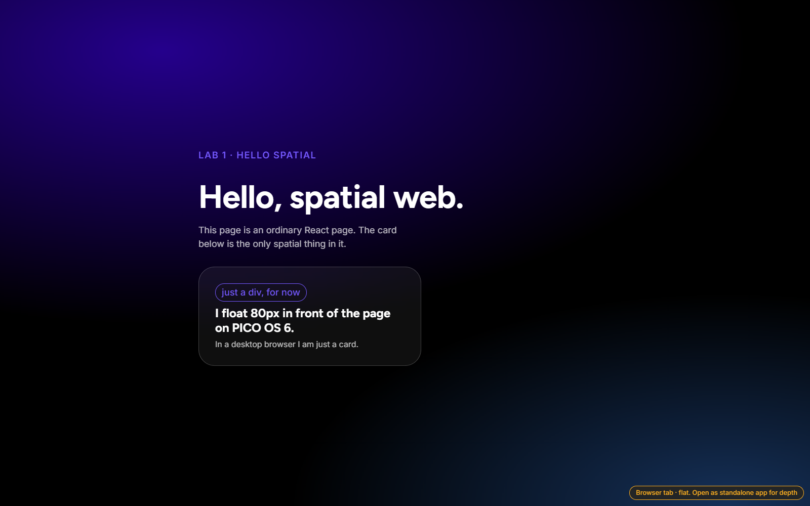
You should see
The dev server starts in the background (log in .academy/logs/) and the emulator opens http://localhost:5301/.
Level 1 · Hello Spatial · Step 6 of 8
Open it in the emulator
Do this Open lab p1 in the emulator at localhost, through adb reverse, and screenshot it.
node setup/launch.mjs 1Start lab p1 with `npm run dev:xr` in labs/p1-hello-spatial/start (port 5301), open it in the running PICO emulator with `node setup/launch.mjs 1`, wait 5 seconds, take a screenshot with `node setup/snap.mjs`, and tell me what loaded. If the frame is mostly black, take a burst before concluding anything.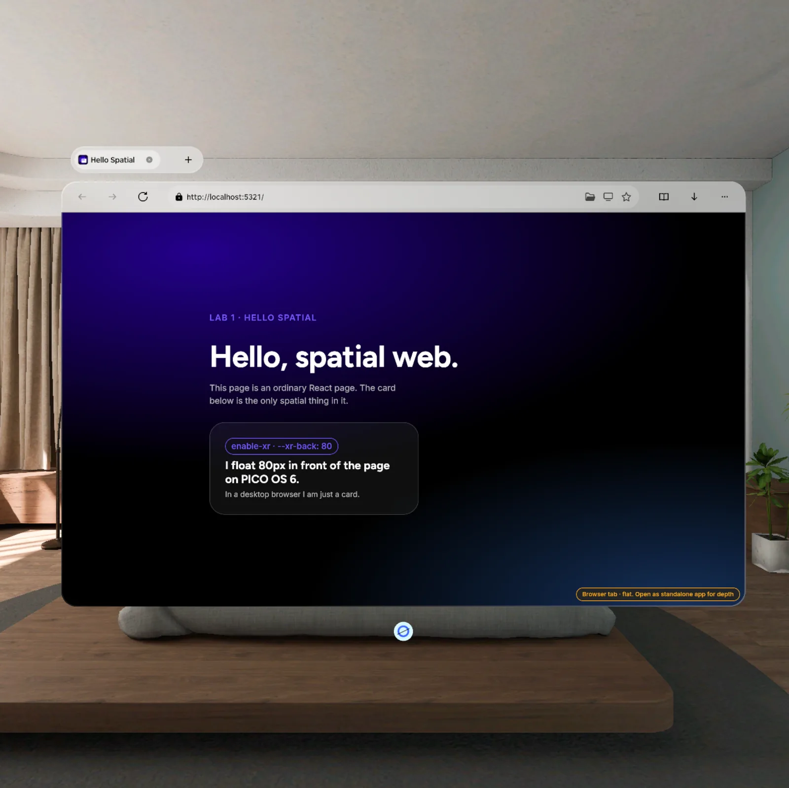
You should see
Your page loads in the PICO Browser at http://localhost:5301/, still a flat tab. The next slides make it pop out.
Level 1 · Hello Spatial · The one rule
Never point web launch at a real headset
pico-cli web launch is for the emulator only.
- It installs a 336 MB PICO WebSpatial browser APK on the target before it opens anything.
- It rewrites localhost to 10.0.2.2, which exists only inside the emulator and isn't a secure context there either.
- Both are right for the emulator and wrong for a headset. A PICO 4 Ultra runs OS 5.x and has no WebSpatial runtime anyway.
- On this emulator image it also fails (
INSTALL_FAILED_UID_CHANGED): the browser is a system app it can't update. - Use
node setup/launch.mjs <n>:adb reverseplus localhost, and it refuses any target that isn't an emulator.
Level 1 · Hello Spatial · Step 7 of 8
Make it pop out: install it
Do this In the address bar, just left of the star, click the monitor icon, titled Install app on OS 6.0.0 (PICO's docs call it Open as standalone app). Then Install.
- Install app dialog: click Install. The app opens in its own window with a glass background.
- Wait up to 60 s; if the panels are still missing, close and reopen the app once. Panels arrive late on a cold launch. Don't judge at 5 s.
- Next time, open it from its own tile on the home launcher, not from the browser.
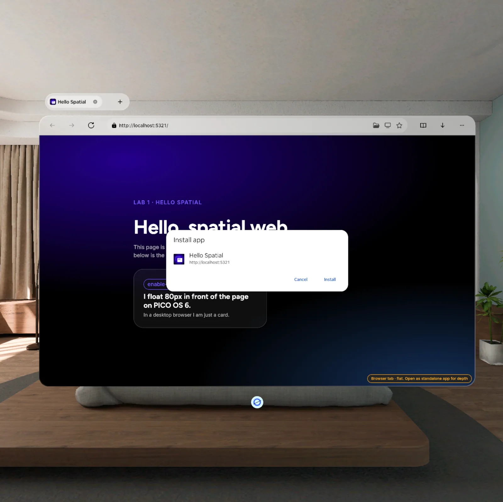
You should see
The app opens as its own window. Within 60 s the enable-xr card floats in front of the page (if not, close and reopen the app once).
Level 1 · Hello Spatial · Same page, one number changed
Proof it's real depth
Same DOM. Only --xr-back changed, from 80 to 400.
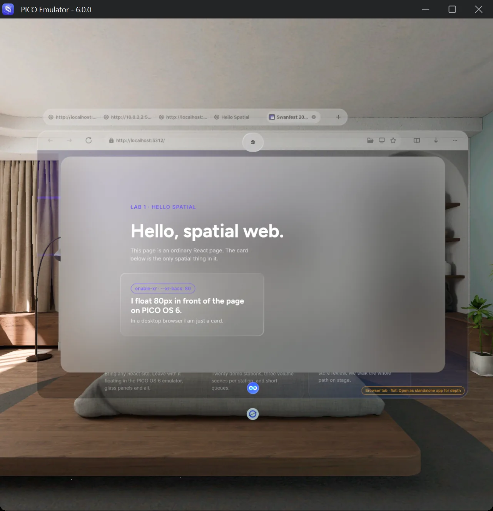
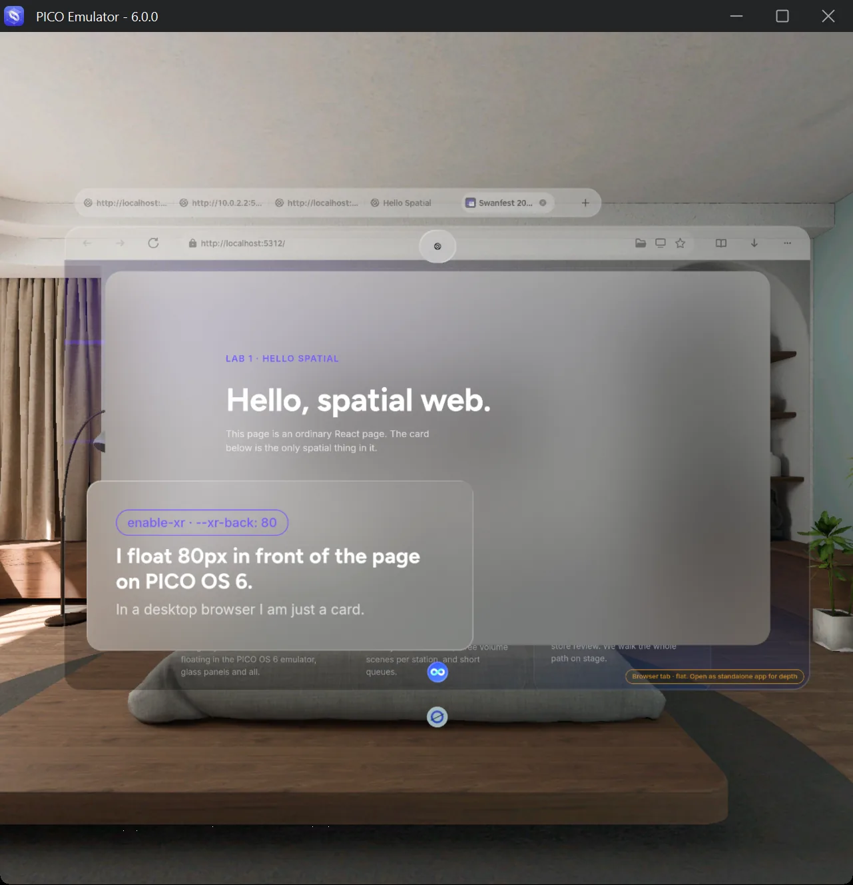
A flat element can't leave its window. That card is a real plane in front of the page.
Level 1 · Hello Spatial · Step 8 of 8
Prove the runtime loaded
Do this Add a badge showing the display-mode and the user-agent markers, then read it in all three places.
Add a small badge to the page that shows the display-mode (browser vs standalone/minimal-ui via matchMedia) and whether navigator.userAgent matches /PicoWebApp\// and /WebSpatial\//. Tell me what it should say in a desktop browser, in a PICO Browser tab, and after Open as standalone app.You should see
Desktop browser: browser, no markers. PICO Browser tab: still browser. That's why it's flat. Installed Web App: standalone, and the UA contains PicoWebApp/<ver> and WebSpatial/<ver>.
Level 1 · Hello Spatial · Checkpoint
Checkpoint: Hello Spatial
You're done when the app is installed as a Web App and something floats.
- The app is installed as a Web App in the emulator (its own window, its own launcher tile).
- Your
enable-xrparagraph is visibly in front of the page. - The same page looks completely normal in desktop Chrome.
- You can name the three things that make a React app a WebSpatial app on PICO:
jsxImportSource,<SpatialBoot>, a valid PWA manifest.
A normal-looking page in Chrome is not a bug. That's the fallback working.
Level 1 · Hello Spatial · Lab
Lab p1: hello spatial
Build it yourself from the start folder. The solution folder is there when you're stuck.
Each lab has start/ (you edit this) and solution/ (the answer). Install every lab's dependencies once, from the kit root:
Then start lab 1's dev server in the background and open it in the emulator, still from the kit root (p1 serves on port 5301):
npm run labs:installnode setup/launch.mjs 1 --serve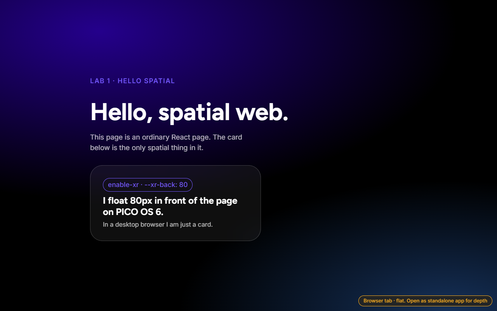
Level 2 · Spatialize a website
Spatialize a website
The headline level. You don't rebuild the site. You pick a few elements and give them a Z axis.
- Mark the elements you want lifted with
enable-xr. - Lift them toward you with
--xr-back. - Glass: make the window transparent and give lifted elements a translucent material.
- Split: move secondary content into its own window with
initScene+window.open.
X and Y stay plain CSS. Every Z property is ignored in an ordinary browser, so the desktop site doesn't change.
Level 2 · Spatialize a website · Step 1 of 7
Take the before picture
Do this Serve the lab's starting site and open it in the emulator.
From the kit root (port 5302):
node setup/launch.mjs 2 --serve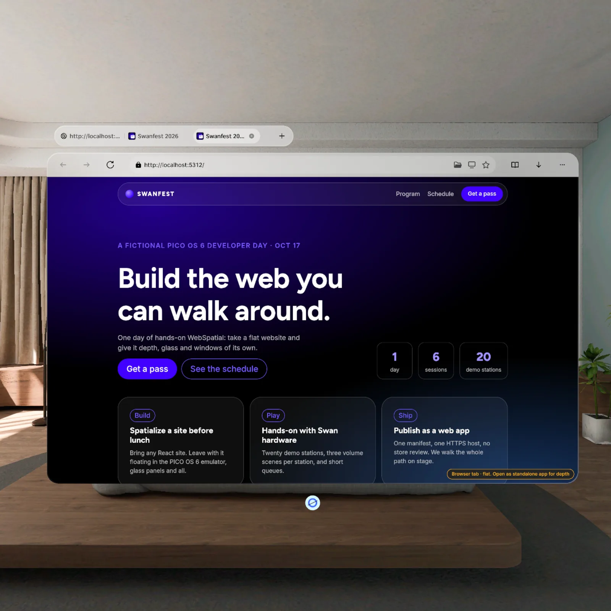
You should see
The unchanged site loads in the emulator: one flat, opaque panel. Screenshot it now. You'll compare against it in step 6.
Level 2 · Spatialize a website · Step 2 of 7
Mark and lift
Do this Ask Claude Code to spatialize the nav and the three feature cards.
Here is an ordinary landing page. Spatialize it with WebSpatial without breaking the desktop version: mark the nav and the three feature cards enable-xr, give each card position: relative, --xr-back: 40 and --xr-background-material: translucent, set html { --xr-background-material: transparent } so the window glass disappears, and list every file you changed and why.You should see
A short diff: enable-xr on the nav and three cards, a CSS block for .card, one rule on html, and a list of changed files with reasons.
Level 2 · Spatialize a website · Step 3 of 7
Read what --xr-back does
Do this Check the card CSS against the three rules.
- It's an inset like
top, but on Z: the distance to the plane behind the element. - Don't nest
enable-xrinsideenable-xr. On PICO OS 6.0.0 the nested one never rendered. Lift one or the other. - Units are px, not metres.
"0.1m"is not valid here.
.card {
position: relative; /* required: relative, absolute or fixed */
--xr-back: 40; /* px only, one decimal allowed */
}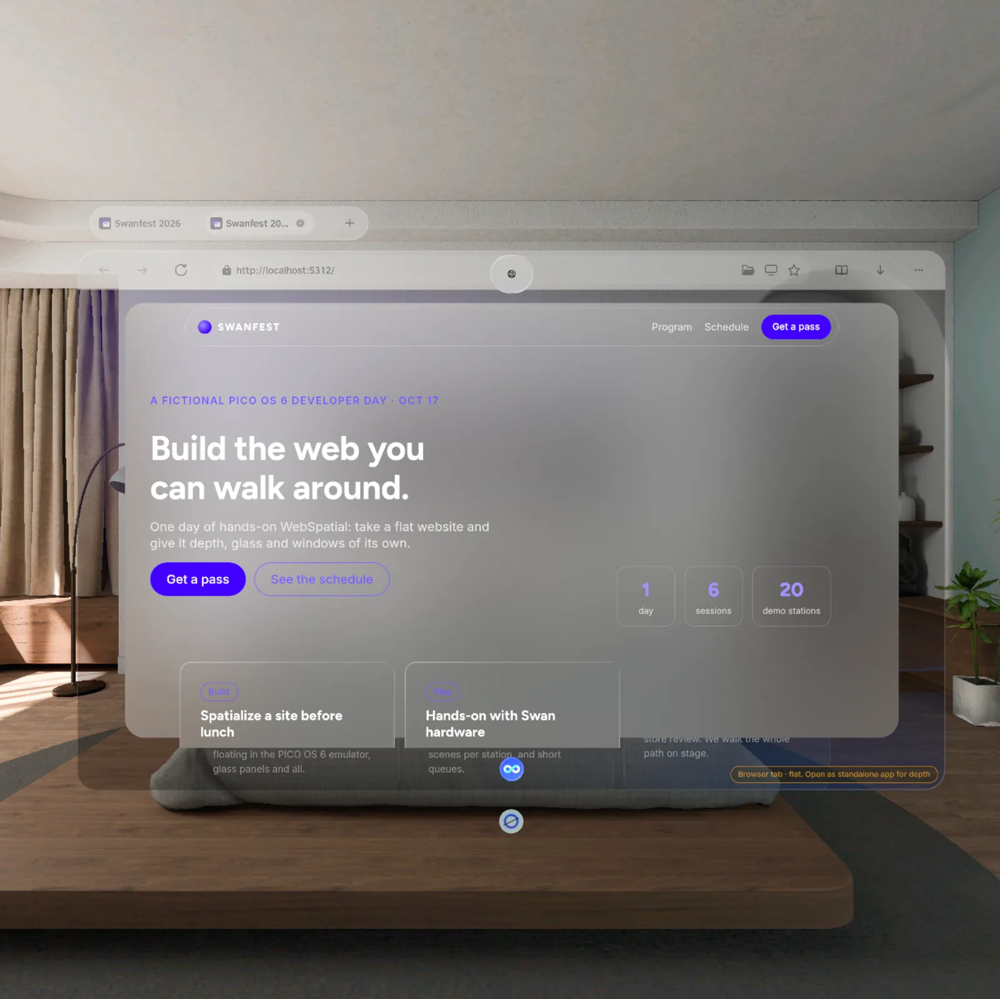
You should see
If a card doesn't move: it's missing enable-xr, or it has no position.
Level 2 · Spatialize a website · Step 4 of 7
Make the glass show through
Do this Clear any background you paint over the glass, in spatial mode only.
Only translucent, transparent and none exist. Solid panel? Your own background covers the glass:
html { --xr-background-material: transparent; } /* the window */
.card { --xr-background-material: translucent; } /* a lifted element */My cards are lifted but show a solid white panel instead of glass. Find every CSS rule that paints a background under or on .card, and make them transparent only when navigator.userAgent matches /WebSpatial\//. Show me the diff.Level 2 · Spatialize a website · Step 5 of 7
Split off a second window
Do this Open a details window from the Learn more button.
Add a second window scene called 'details' with initScene (defaultSize 480 x 600), registered in <SpatialBoot onReady={registerScenes}> (not at module load), open it from the Learn more button with window.open('/?scene=details', 'details'), route ?scene=details to a Details component in main.tsx, and make sure it still opens as a normal tab in a desktop browser.// register after boot, or it's a no-op
const registerScenes = () =>
initScene('details', prev => ({
...prev,
defaultSize: { width: 480, height: 600 },
}), { type: 'window' })
<SpatialBoot onReady={registerScenes}>
// on click; 2nd arg = scene name
window.open('/?scene=details', 'details')You should see
Learn more opens a second window (the OS may size it like the main window). In desktop Chrome it opens a tab.
Level 2 · Spatialize a website · Step 6 of 7
Take the after picture
Do this Capture the spatialized site and compare it with the before.
Take a before and after screenshot in the emulator with pico-cli capture screenshot and describe exactly which elements now float and which stayed flat. Then open the page in desktop Chrome and confirm nothing broke.pico-cli capture screenshot -o shots/spatialized.pngYou should see
Nav and cards float on glass in front of a clear window. Everything else stayed flat. Desktop Chrome looks the same as before.
Level 2 · Spatialize a website · Step 7 of 7
Read the runtime's logs
Do this Pull recent log lines that mention WebSpatial.
pico-cli log -e webspatial -n 200You should see
The last 200 logcat lines that match "webspatial". Errors here explain a card that won't lift or a window that won't open.
Level 2 · Spatialize a website · Checkpoint
Checkpoint: spatialized
The headline result. Show your neighbour both screenshots.
- You have a before and an after screenshot from the emulator.
- The nav and the cards float; the window glass is clear.
- The details window opens from Learn more.
- The desktop build is unchanged.
Two questions for the room: which values does --xr-background-material accept? What's the difference between --xr-back: 40 and transform: translateZ(40px)?
Level 2 · Spatialize a website · Lab
Lab p2: spatialize a site
The headline lab. Mark, lift, glass, split, on a real landing page.
Edit labs/p2-spatialize-site/start, serve it with npm run dev:xr on port 5302, and open it with node setup/launch.mjs 2. launch.mjs wraps pico-cli web launch and refuses any target that isn't an emulator. Keep the desktop version working the whole way through.
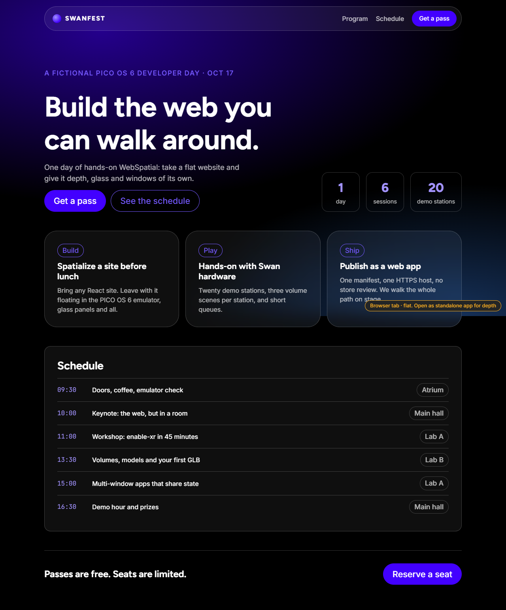
Level 3 · 3D + volumes
3D and volumes
WebSpatial puts 3D inside a 2D layout. A 3D container takes part in CSS layout as a flat plane, and its content lives in a box in front of it.
<Model>shows a prebuilt GLB or USDZ file. Its API follows the web<model>element.<Reality>composes a scene from primitives, materials and model entities as React components.- Volume scene: a window that behaves like a physical object, sized in metres.
- Units flip:
--xr-depthis px, entity sizes and positions are metres, rotation is radians.
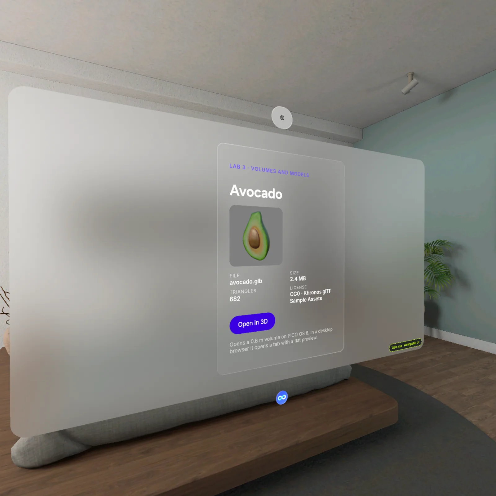
Level 3 · 3D + volumes · Step 1 of 6
Open a volume with a model
Do this Ask Claude Code for a 'viewer' volume that shows your GLB.
Add a volume scene called 'viewer' (defaultSize 0.6m on all three axes, registered in <SpatialBoot onReady={registerScenes}>, not at module load) that shows public/model.glb with <Model enable-xr> plus a poster image, onLoad and onError handlers. Open it from a button on the main page with window.open('/?scene=viewer', 'viewer'). In a desktop browser the button should still open a normal tab.// call from <SpatialBoot onReady={registerScenes}>
export function registerScenes() {
initScene('viewer', prev => ({
...prev,
defaultSize: {
width: '0.6m', height: '0.6m', depth: '0.6m',
},
}), { type: 'volume' }) // 3rd argument
}Level 3 · 3D + volumes · Step 2 of 6
Launch and record it
Do this Serve lab p3, open it in the emulator and record 15 seconds of the volume.
node setup/launch.mjs 3 --servepico-cli capture record -t 15 -o shots/volume.mp4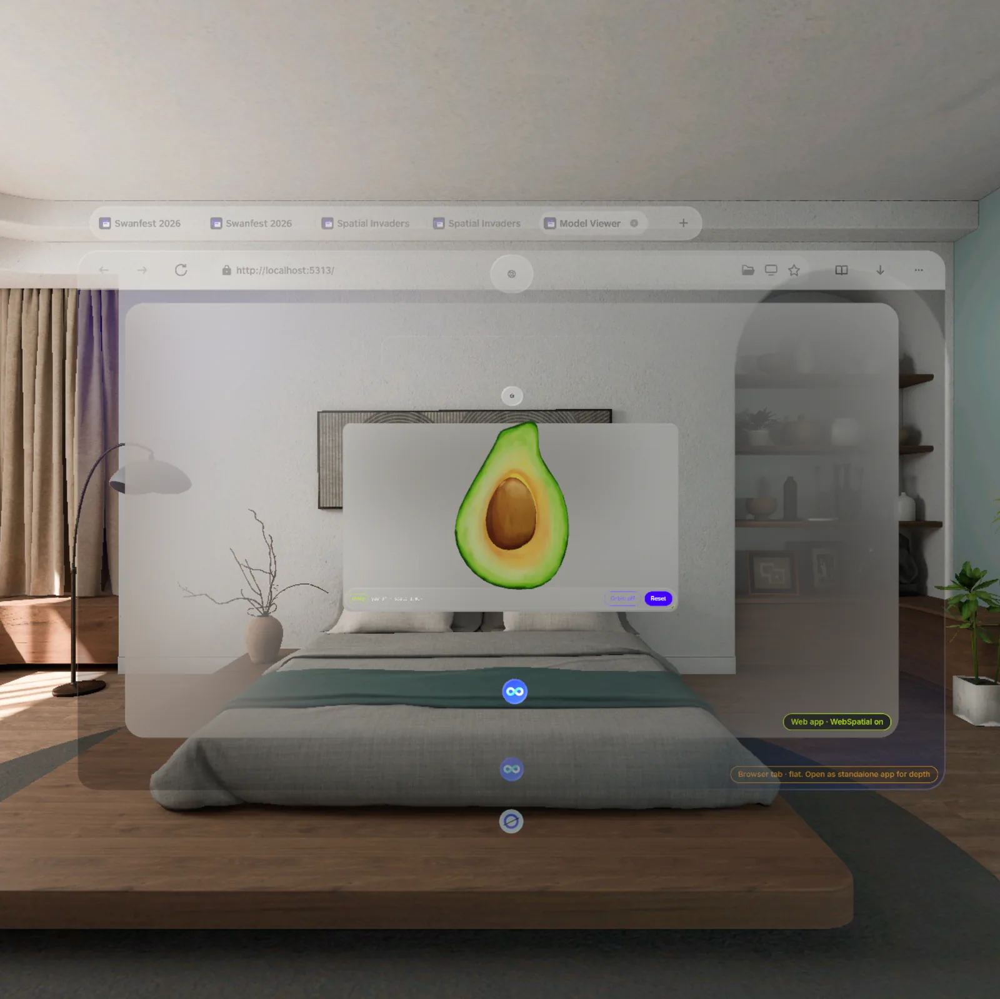
You should see
A 15 second clip in shots/volume.mp4 with the viewer volume open and the model inside it.
Level 3 · 3D + volumes · Step 3 of 6
Make it respond to a drag
Do this Wire spatial drag and tap onto the model.
onSpatialTap:offsetX/Y/ZandclientX/Y/ZonSpatialDrag:translationX/Y/Z, px from the startonSpatialRotate:quaternion·onSpatialMagnify:magnification
Make the model follow a spatial drag: on onSpatialDragStart remember the start, on onSpatialDrag apply translationX/Y/Z (px) through a style transform, and on onSpatialTap reset. Tell me which event carries which field and what I have to test by hand because adb cannot inject a spatial ray.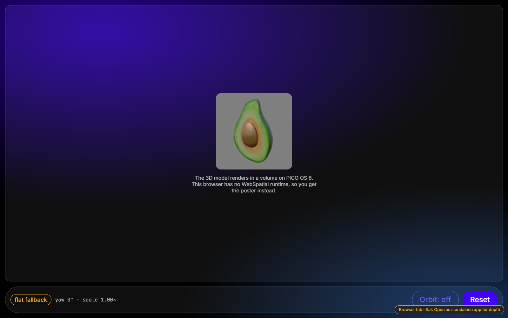
You should see
Each handler logs to the console, so you can prove it fired.
Level 3 · 3D + volumes · Step 4 of 6
Check the warnings
Do this Read recent log lines at warning level or above.
pico-cli log -l W -n 200You should see
The last 200 lines at W, E or F. A model that failed to load shows up here, and your onError handler fires.
Level 3 · 3D + volumes · Step 5 of 6
Keep the model light
Do this Ask Claude Code to measure the GLB and compress it if it's heavy.
Check the GLB file size and triangle count with gltf-transform inspect and tell me if it is too heavy for a headset. If it is, give me the gltf-transform command to simplify and compress it, run it, and compare before and after.npx @gltf-transform/cli inspect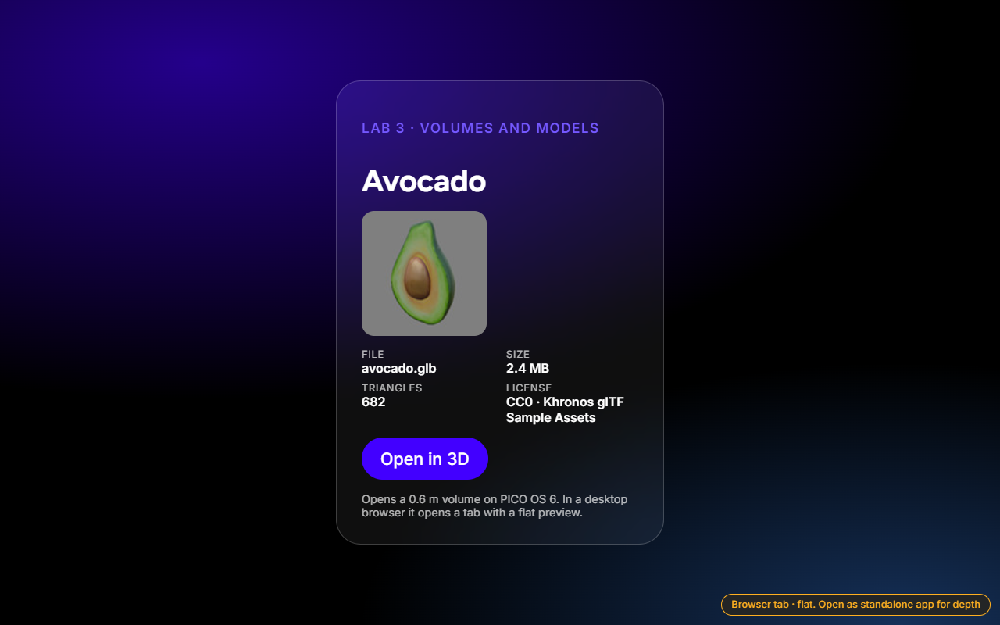
You should see
A size and triangle count for the file, and a before/after comparison if Claude compressed it.
Level 3 · 3D + volumes · Step 6 of 6
Stretch: build with primitives
Do this Build a trophy from primitives with no model file at all.
Without any external model, build a trophy in a <Reality> from Box, Cylinder and Sphere with one unlit gold Material, slowly rotating on Y via requestAnimationFrame. Gate it with WebSpatialRuntime.supports('Reality') and render a flat <img> fallback otherwise.You should see
A gold trophy turning slowly in the volume. In desktop Chrome, the flat image.
Level 3 · 3D + volumes · Checkpoint
Checkpoint: 3D and volumes
You're done when a volume opens with your model or scene, and a log line proves a gesture fired.
- A volume opens with a model or a primitive scene.
- At least one spatial gesture fired, proved by a console log line.
- The page still works in desktop Chrome, with a flat fallback.
Quick check: how big is a <Box width={0.2}>? (20 cm: entity lengths are metres.)
Level 3 · 3D + volumes · Lab
Lab p3: volume model
A model in a volume, a gesture that moves it, and a fallback for everyone else.
Start from the lab's start folder. Log every gesture handler so you can prove it fired.
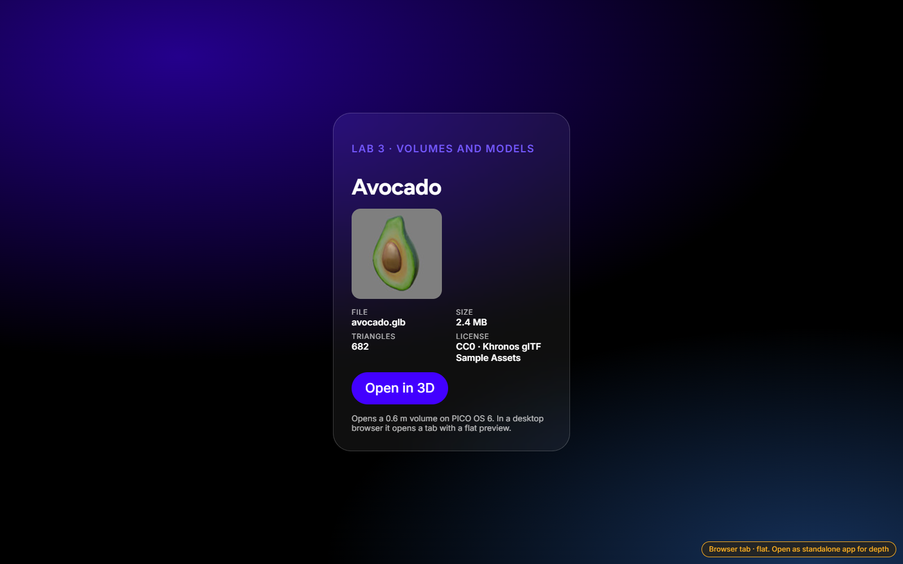
Level 4 · Space Invaders in depth
Spatial Invaders: depth as gameplay
So far depth has been decoration. Here it carries meaning: a complete, flat Space Invaders game where Z tells part of the story.
- Rows stand in terraces, back rows deepest.
- The formation comes toward you as it descends.
- Your shots fly away from you; enemy shots fly at you.
- A hit row flinches forward before the invader vanishes.
- A HUD window and a hall of fame window, synced over
BroadcastChannel.
Level 4 · Space Invaders in depth · The depth map
Where everything sits in Z
Each row writes its absolute depth: (5 + y × 0.08) + row × 20 + flinch. Nothing is nested. At wave 1 (y = 80) the front row is 11.4 + 80 = 91.4 px. Keep depths modest: planes lifted far toward you, low in the window, fall below it.
Level 4 · Space Invaders in depth
The layer budget: 11 planes, not 230+
Each enable-xr element is its own native plane. Spatialize containers, not sprites.
| Layer | Planes | Depth (px) |
|---|---|---|
| Rows 0 to 4 | 5 | (5 + y × 0.08) + row × 20 |
| Invaders (55) | 0 | ride on their row |
| Shields | 1 | 100: four bunkers on one plane |
| Ship | 1 | 120, always the closest |
| Shots, bombs | 4, pooled | travel in Z |
| ◀ Fire ▶ | 0 | flat on the window; pinch = click |
| Playfield | 0 | plain div: no nesting |
11 planes (12 with the overlay card) vs 230+ if every sprite were spatial.
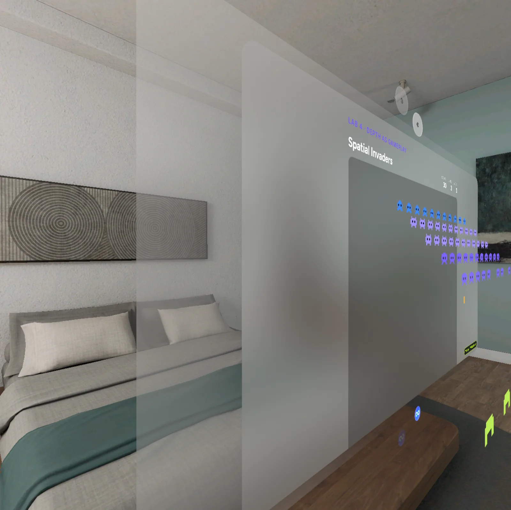
Level 4 · Space Invaders in depth · Step 1 of 7
Wire WebSpatial
Do this Play a round flat first, then wire the same four pieces as p1 and p2.
jsxImportSourceintsconfig.jsonandreact({...})invite.config.ts<SpatialBoot>around<Game />inmain.tsx- The manifest is already there:
xr_main_scenesizes the game window 900 × 1000
node setup/launch.mjs 4 --servenpm i @webspatial/react-sdk@2.0.0 @webspatial/core-sdk@2.0.0 --save-exact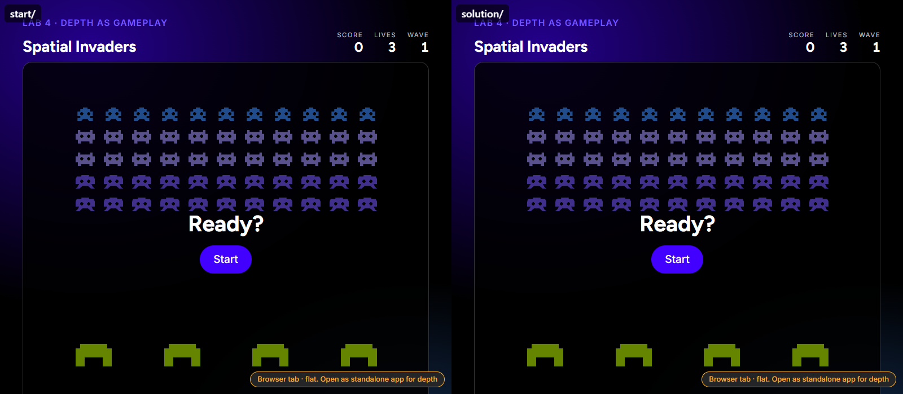
You should see
http://localhost:5304/ plays the flat game. Press Enter to start. Then make the window glass. The playfield stays a plain div: nothing spatial nests inside anything spatial.
Level 4 · Space Invaders in depth · Step 2 of 7
Rows get depth
Do this One spatial layer per row, not per sprite.
Spatialize this Space Invaders game with one spatial layer per ROW, not per sprite: make each .row enable-xr (no spatial parent: never nest enable-xr inside enable-xr, it does not render on PICO OS 6.0.0) and write each row's --xr-back = row * 20 (row 0, the top/back row, deepest) through its ref. Leave every invader a plain div. Put the depth constants in src/depth.ts with a writeBack(el, z) helper that rounds to one decimal and skips unchanged values, and make the loop's transform/visibility writes skip unchanged values too. Then count the enable-xr elements.// absolute depth: no spatial parent
export const rowWorldZ = (y: number, row: number, pop = 0) =>
formationZ(y) + row * ROW_STEP + pop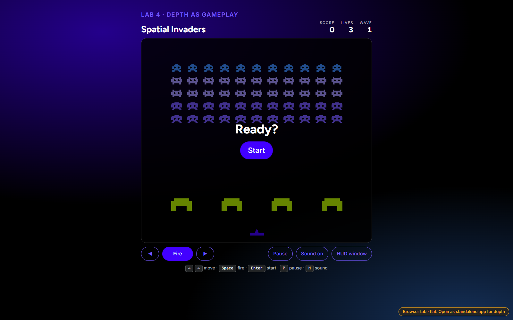
You should see
No visible change on desktop. In DevTools each .row's inline style shows --xr-back 20 px apart, row 0 deepest.
Level 4 · Space Invaders in depth · Step 3 of 7
Depth tied to descent
Do this Make the threat physically approach, written from the game loop.
Tie the formation's depth to its descent: each row's --xr-back = (5 + y * 0.08) + row * 20 + flinch, written from the requestAnimationFrame loop through the row's ref with writeBack, so it only writes when the rounded value changes. No CSS transitions on spatial elements. Show me the loop code you changed.rowRefs.current.forEach((el, r) => // SPATIAL: every row comes toward you as it descends
writeBack(el, rowWorldZ(w.fy, r, w.pops[r])))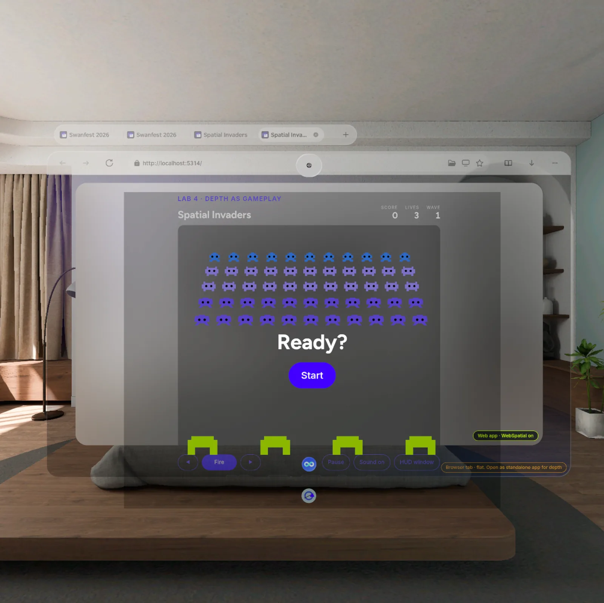
You should see
At the start (y = 80) the rows read 11.4 / 31.4 / 51.4 / 71.4 / 91.4; near the shields (y ≈ 400) each is about 25 px further forward.
Level 4 · Space Invaders in depth · Step 4 of 7
Shots travel in Z; hits flinch
Do this Give the ship, shields, shots and bombs their depths.
Make the ship (120) and the shield line (100) enable-xr at fixed depths, and the 2 pooled shots and 2 pooled bombs enable-xr. Player shots: lerp --xr-back from the ship's depth to the front row's absolute depth (formation + row) as they rise. Enemy shots: lerp from the depth of the row that fired them to the ship's depth as they fall. Keep collision detection 2D. On a hit, pop that row forward by 24px and decay it back over about 200ms in the loop, while the invader flashes before it vanishes.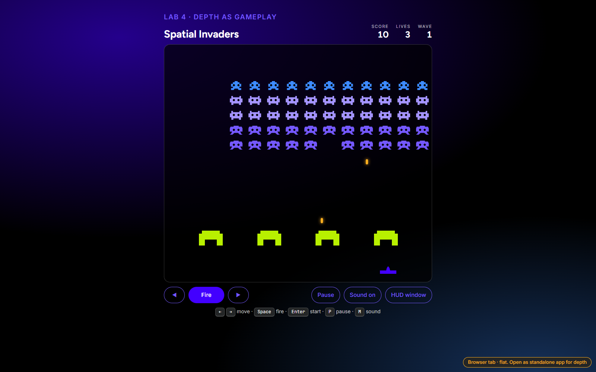
You should see
11 planes, matching the layer budget. Your shots recede, enemy shots approach, and a hit row flinches.
Level 4 · Space Invaders in depth · Step 5 of 7
The HUD window
Do this Give score, lives and wave their own window, kept in sync.
Add a HUD window: register initScene('hud', cfg => ({...cfg, defaultSize: {width: 360, height: 480}}), { type: 'window' }) in src/scenes.ts, open it with window.open('/?scene=hud', 'hud') from a "HUD window" button, call registerScenes from <SpatialBoot onReady={registerScenes}> (initScene before boot is a silent no-op in SDK 2.0), route ?scene=hud in main.tsx, and sync score, lives, wave and status over a BroadcastChannel named 'invaders'. The game is authoritative, broadcasts only when HUD state changes, answers 'hello', and applies 'intent' messages (pause, restart) from the HUD. Prove it in desktop Chrome, including a HUD opened mid-game and one closed and reopened.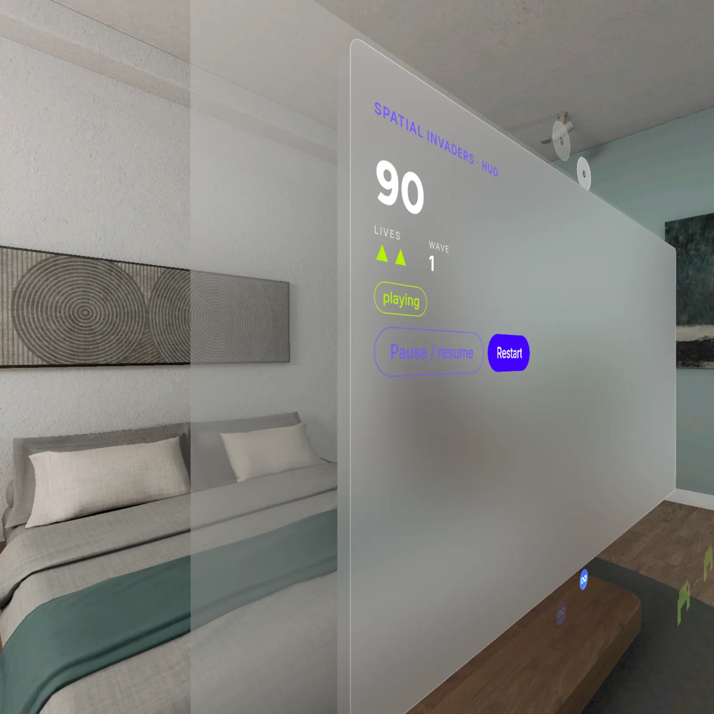
Level 4 · Space Invaders in depth · Step 6 of 7
Gotcha: a message posted just before window.open can vanish
Do this Post first, then open the new window on a later task.
// broken: same task, the HUD misses it
bus.post({ type: 'gameover', score, wave })
openScene('halloffame')
// fixed: open the new window on a later task
bus.post({ type: 'gameover', score, wave })
window.setTimeout(() => openScene('halloffame'), 100)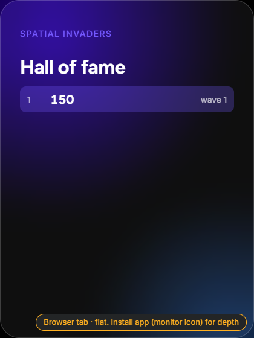
Level 4 · Space Invaders in depth · Step 7 of 7
In the emulator
Do this Launch it, install it as a Web App, open the HUD, and capture the proof.
node setup/launch.mjs 4Launch the game in the PICO emulator with node setup/launch.mjs 4, install it as a web app, open the HUD, take a burst of screenshots with node setup/snap.mjs, then close the HUD and reopen it. Tell me whether it showed the right score immediately after reopening.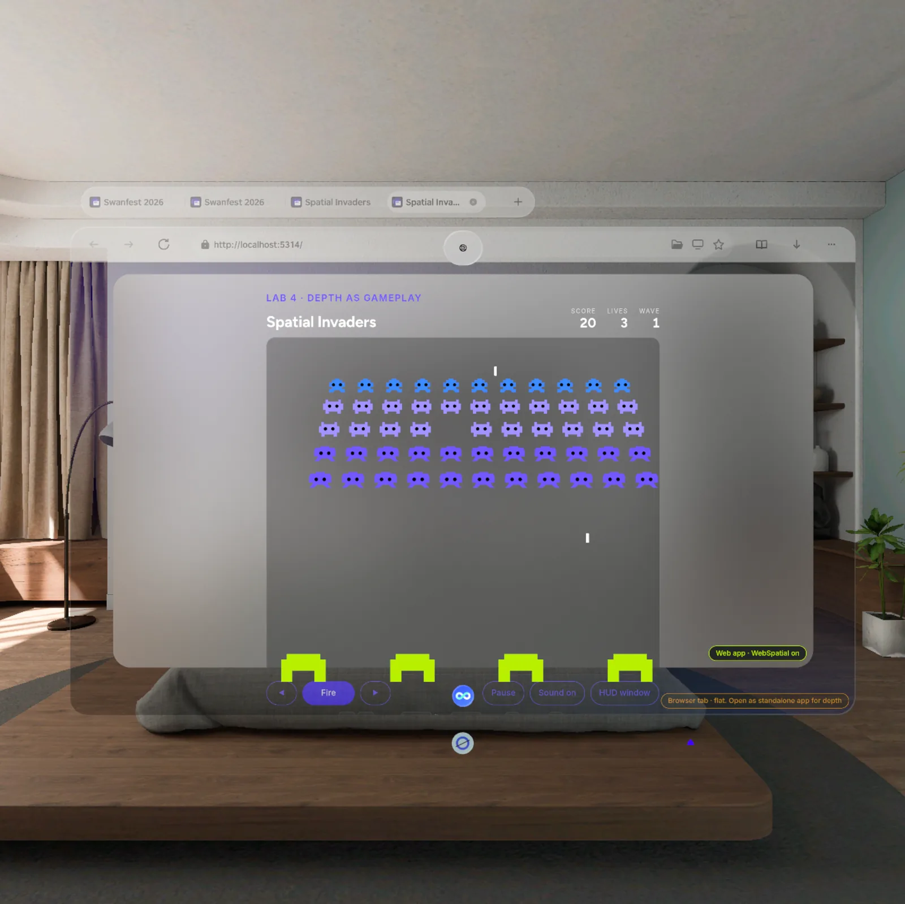
You should see
Installed as a Web App (monitor icon, titled Install app, just left of the star → Install; wait up to 60 s; if the panels are still missing, close and reopen the app once): stepped rows, an approaching formation, flinching hits, shots flying in and out of depth. The corner badge reads "Web app · WebSpatial on".
Level 4 · Space Invaders in depth · Checkpoint
Checkpoint: invaders in depth
You're done when depth tells the story and the windows stay in sync.
- You can state the plane count (11, 12 with the overlay), why invaders aren't planes, and why nothing is nested.
- DevTools: each
.row's--xr-backrises as the formation descends, 20 px apart. - The HUD opened mid-game shows the live score, its Pause works, it recovers after close + reopen, and it shows "Game over".
- Emulator (Web App): stepped rows, an approaching formation, flinching hits, shots in and out of depth.
Level 4 · Space Invaders in depth · Lab
Lab p4: Spatial Invaders
Rows in depth, a formation that advances in Z, shots both ways, a HUD and a hall of fame.
Edit start/ (port 5304), never solution/ (5314). The diff between them is the whole lesson:
Run git diff --no-index labs/p4-space-invaders/start/src labs/p4-space-invaders/solution/src and walk me through every SPATIAL change in order: which elements became planes, what depth each gets from src/depth.ts, and why the invaders and shield blocks did not.Level 5 · Agentic expert
Agentic expert: Claude Code runs the loop
Every step you did by hand is a command, so an agent can run them. Your job is to hold it to evidence.
- The loop: edit, serve,
pico-cli web launch, capture,pico-cli log -l W, judge against SPEC.md, repeat. - Evidence per claim: a screenshot path, a log line or a DevTools read. "The code looks right" isn't evidence.
- Bound it: an iteration cap and a stopping condition.
- Ground it: PICO questions go through the
pico-dev-knowledgeMCP, with a cited source.
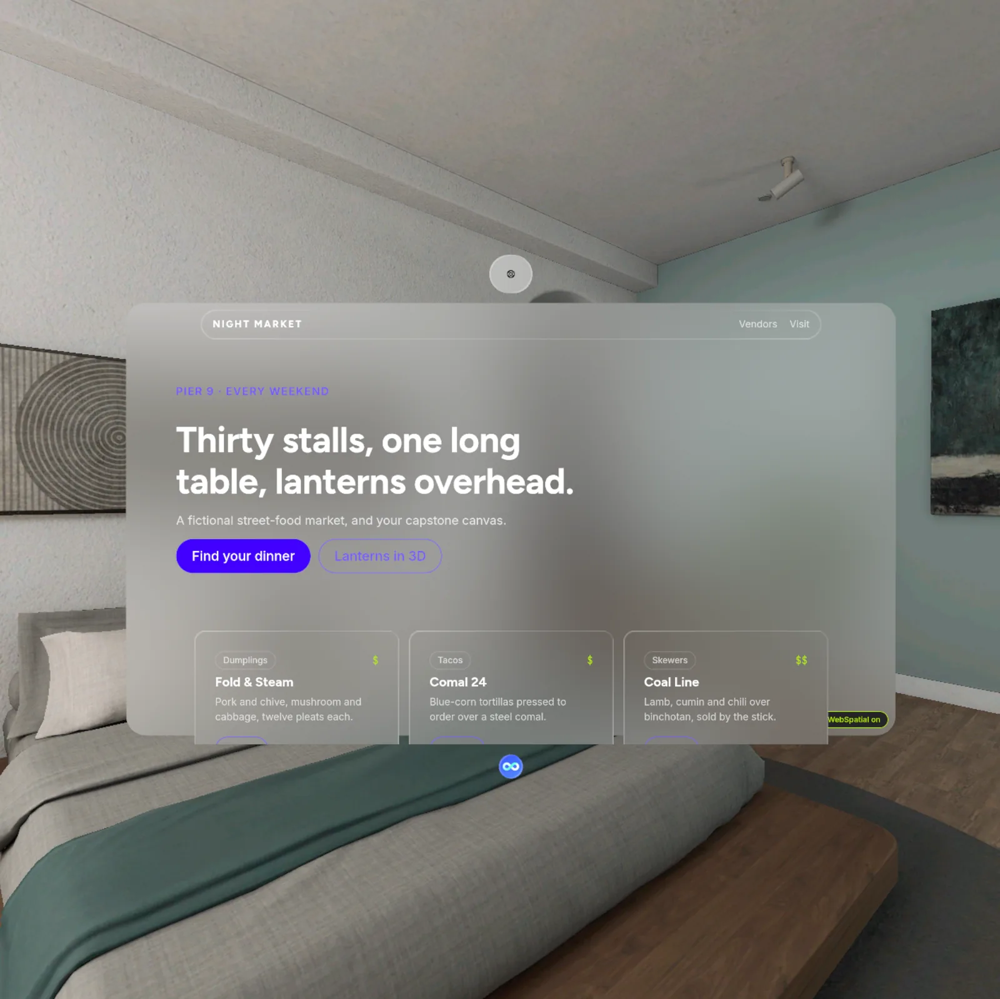
Level 5 · Agentic expert · Step 1 of 6
Check the agent layer
Do this Confirm PICO's skills and knowledge base are installed and current.
pico-cli plugin doctorpico-cli knowledge pullYou should see
plugin doctor reports the skills installed. knowledge pull updates the PICO docs graph behind the pico-dev-knowledge MCP.
Level 5 · Agentic expert · Step 2 of 6
Docs for your agent, with one fix
Do this In your own project, add WebSpatial's docs and agent memory, then pin SDK 2.0.
Verified 2026-09-24: adds WebSpatial docs + agent memory to a project. Its bundled docs predate SDK 2.0, so don't run it inside the labs. In your own project, run it, then add the second block below to CLAUDE.md.
npx @webspatial/starter aiSDK 2.0: wrap the app in <SpatialBoot>; labs/VERSIONS.md overrides .webspatial/docsYou should see
.webspatial/docs (54 files), .claude/ + a CLAUDE.md block, .codex/skills, an AGENTS.md block.
Level 5 · Agentic expert · Step 3 of 6
Hand over the whole loop
Do this Give Claude Code a spec, a cap and a demand for evidence.
Run the whole loop on this repo without asking me: start the dev server, launch it in the PICO emulator, screenshot every scene, read the last 200 log lines at warning or above, fix anything broken, and repeat until the screenshots match SPEC.md. Stop after 5 iterations either way and show me the evidence for each claim.You should see
A report where each claim has a screenshot path or a log excerpt next to it, and a stop at 5 iterations or fewer.
Level 5 · Agentic expert · Step 4 of 6
Ask PICO, not the model's memory
Do this Audit your scenes against PICO's own design guidance, with citations.
Use the pico-dev-knowledge MCP to find what PICO recommends for window sizes and text legibility in spatial apps, cite the source file for each rule, then audit my scenes against it.You should see
Rules with a source file each, then a list of your scenes that pass or fail them.
Level 5 · Agentic expert · Step 5 of 6
Profile it
Do this Find the process, then record and analyze a trace.
Confirm which package your page runs in first. On the emulator the PICO Browser is com.picoxr.browser.
pico-cli app listRecord a 10 second perf trace while the volume scene is open, run the built-in analysis, and tell me the top three costs and one change for each. Say which of them are the browser's cost and which are mine.You should see
Three costs, each with one change, split into the browser's and yours. Usual suspects: too many enable-xr elements, a heavy GLB, a style loop that runs every frame.
Level 5 · Agentic expert · Step 6 of 6
Ship it
Do this Deploy over HTTPS and launch it as a Web App from its manifest.
On PICO OS 6 the HTTPS URL is the distribution. No packaging.
pico-cli web launch --manifest-url https://your.site/app.webmanifest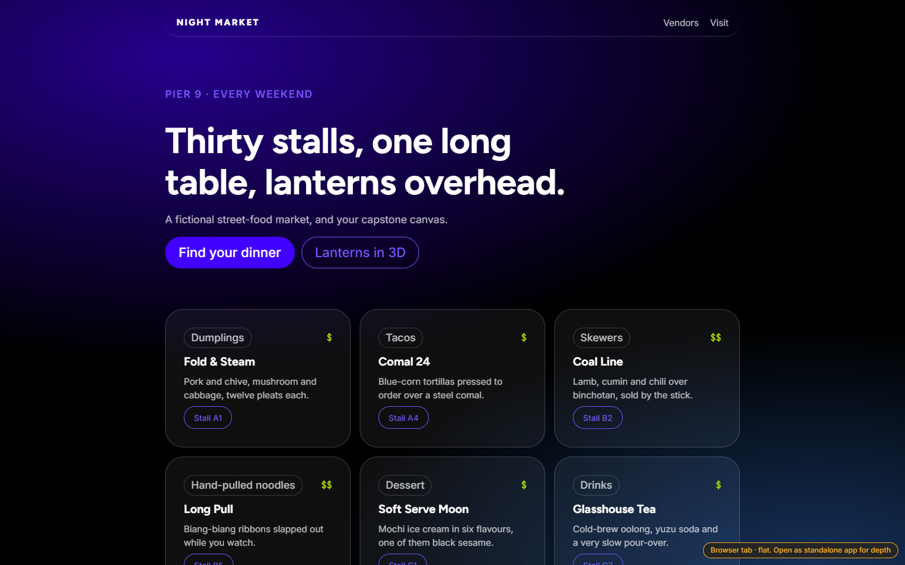
You should see
Your site opens as a Web App. The manifest needs name or short_name, start_url and icons.
Level 5 · Agentic expert · Checkpoint
Checkpoint: expert
Tick these honestly.
- Claude Code ran a full loop and every claim came with evidence you opened.
- You got a PICO answer with a cited source from the knowledge MCP.
- You recorded a trace and can name the top cost.
- You can say which claims are proven on the emulator and which would need real PICO OS 6 hardware.
Level 5 · Agentic expert · Lab
Capstone: spatialize your own site
Your site, end to end, with evidence.
- React + wiring (L1): Vite + React,
<SpatialBoot>, manifest. - Lift (L2): at most six elements, on glass.
- A second window (L4) and one volume (L3), with a flat fallback.
- Evidence: before/after shots and a 30 s recording.
Here is my site: <url or repo>. Plan how to spatialize it with WebSpatial in four steps (enable-xr pass, materials and depth, one extra scene, one volume), then do step one and show me a screenshot.You're an expert when you can...
Take the list home and tick it honestly.
- Explain in two sentences why WebSpatial is not WebXR.
- Ship a spatial version of any React site whose desktop build is unchanged.
- Say which
--xr-*property applies to which element, and in what unit. - Put a GLB in a volume with a poster, an error path and a flat fallback.
- Build a multi-scene app whose state survives any scene closing.
- Hand Claude Code a spec and catch it when its evidence doesn't support its claim.
Troubleshooting · Check top to bottom
Troubleshooting: "it looks flat"
| Symptom | Check / fix |
|---|---|
| Flat in a browser tab | A tab is never spatial. Install it: the monitor icon, titled Install app on OS 6.0.0 (PICO's docs call it Open as standalone app), just left of the star → Install |
| Installed, still flat | Wait up to 60 s; if the panels are still missing, close and reopen the app once |
| Second window blank | The page is wrapped in enable-xr; remove it |
| Some panels render, others don't | An enable-xr nested inside another enable-xr: it never renders on PICO OS 6.0.0. Un-nest |
No install offered at 10.0.2.2 | 10.0.2.2 loads but was not a secure context in our test (no install); use localhost. node setup/launch.mjs <n> opens localhost for you |
| No install offered at localhost | Manifest missing, unlinked, or lacking name / start_url / icons / display |
| Changed the manifest, nothing changed | The installed app keeps the old one: uninstall (adb uninstall <pkg>) and install again |
| Volume or window opens flat at 1280×720 | initScene ran before boot finished, so it did nothing. Register scenes in <SpatialBoot onReady> |
Installed, UA has WebSpatial/, still inert | App not wrapped in <SpatialBoot>: in 2.0 spatial code loads only inside it |
Still inert with <SpatialBoot> | jsxImportSource missing in the tsconfig or in react({ jsxImportSource }) in vite.config.ts |
| One element won't lift | No enable-xr, or no position: relative / absolute / fixed |
| Glass looks solid | Your own background covers the material; clear it in spatial mode |
Troubleshooting · Setup, emulator, network
Troubleshooting: setup and the emulator
| Symptom | Check / fix |
|---|---|
| PICO Spatial plugin won't install | Android Studio must be 2025.1.x, not the latest |
Emulator dies: QEMU main loop exits abnormally | Not enough free RAM; the real message is on stderr. Use the 16 GB recipe |
"Site can't be reached" at localhost:<port> | Dev server not running, or the adb reverse mapping is gone (it resets when the emulator restarts): rerun node setup/launch.mjs <n> |
| Still unreachable | Wrong port, or the firewall blocks Node on private networks |
| Knowledge MCP stopped answering | pico-cli setup ran while sessions were open; restart Claude Code |
Install fails, logcat says manifest is empty | Manifest icons rejected (seen with one SVG icon): ship PNG icons with real sizes (192, 512, 1024 + maskable) |
| One screenshot is mostly black | Capture artefact, not your page: use node setup/snap.mjs (burst) |
| HUD misses a message sent as it opened | Chrome drops a BroadcastChannel post made in the same task as window.open: post, then setTimeout(() => window.open(url, name), 100) |
From PICO · David Oh's slide 12
PICO Early Access Developer Program
Where tonight's build can go next. Quoted exactly from his slide:
PICO EARLY ACCESS DEVELOPER PROGRAM
Invitees get up to $1500 for publishing their AI generated application
October 1-Nov 11 2026
Hardware Access
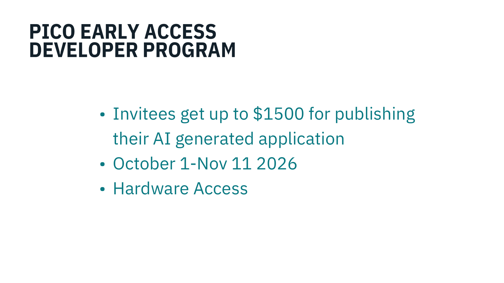
From the WebSpatial team · Run one, read the rest
Official examples
One SDK 2.0 example runs in the kit. The rest are linked, mostly SDK 1.x.
| Linked | Level | SDK |
|---|---|---|
| sample-techshop, WebSpatialPlayground | L2 to L4 | 1.x |
| sample-solarsystem, widget-generator | L3, L4 | 1.x |
webspatial-sdk apps/* (Next, Remix, Rspack) | L5 | 2.0 |
cd examples/webspatial-vite-minnpm run dev:xr # port 5501node setup/launch.mjs --url http://localhost:5501/ # 2nd terminal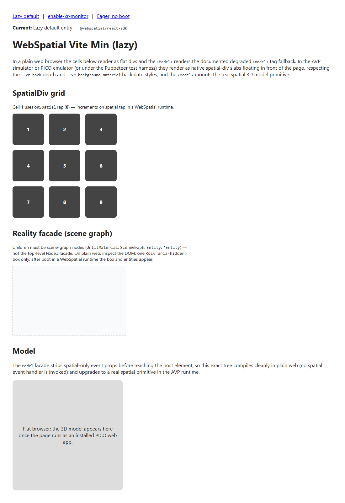
Resources: everything in the kit
One place for all of it. Every link is relative to this deck.
- The kit: github.com/RayyanZahid/pico-workshops (this Academy is in
webspatial-academy/) - This deck: slides.md · deck.json · llms.txt
- Start here: setup/SETUP.md · setup/DEPENDENCIES.md · CLAUDE.md (what Claude Code follows in this kit)
- Curriculum: SYLLABUS · L0 · L1 · L2 · L3 · L4 · L5 · GLOSSARY · TROUBLESHOOTING · outline.json
- Labs: p1 hello spatial · p2 spatialize a site · p3 volume model · p4 Space Invaders · p5 capstone
- From PICO: PICO CLI Quickstart, David Oh · README · slides.md (native Spatial SDK path; shown as sent)
- Versions: labs/VERSIONS.md (SDK 2.0.0 pins, why there's no vite-plugin)
- Official examples: examples/README.md · webspatial-vite-min (runs in the kit, SDK 2.0) · webspatial-sdk apps · showcase
- Emulator notes: labs/EMULATOR-RESULTS.md · labs/SPATIAL-CRACK.md
- Sources (PICO docs): WebSpatial on PICO · Manifest · Install-free Web Apps · assets/pico-docs/WEB-APP-RUNTIME.md
- Outside the kit: webspatial.dev · developer.picoxr.com ·
pico-cli <family> --help(commands checked against pico-cli 0.5.0)